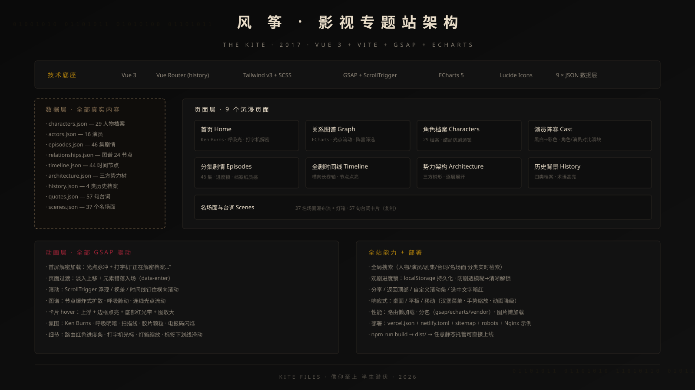

THE KITE · 影视专题站项目总览
Vue 3 + Vite + Tailwind v3 + GSAP + ECharts
《风筝》（柳云龙执导，2017）观众专属影视资料站。视觉上按电影官网标准打造：极深黑底、暗血红与暗青双阵营色、旧纸米黄文字、胶片颗粒与扫描线氛围；内容上 9 个页面覆盖人物、剧情、图谱、历史、台词五大维度，全部基于真实剧集资料整理。
电影级开场：Ken Burns 主视觉、标题模糊→清晰、金色细线展开、8 功能入口错落入场、电报码装饰、全屏扫描线。
ECharts 图谱：名字徽章节点、连线关系标签、阵营筛选 + 人物自由勾选（全选/全不选）、四种排序（阵营/姓名拼音/代号/出场）、独立缩放控件。
29 人完整档案，按阵营分组（可折叠，全部展开/收起）；结局区块带防剧透锁，关联人物头像下标注关系。
16 位演员卡片墙（黑白→彩色 hover），详情面板从下方滑入，角色照/演员照拖动对比滑块。
46 集完整剧情（每集 7-9 句多源还原细节），档案标签式集数导航 + 观剧进度锁，档案纸质感详情页。
横向长卷轴（ScrollTrigger 钉住滚动）：44 节点、五段分区、真实历史标注、节点滚动点亮 + ECharts 统计。
军统保密局 / 中统党通局 / 中共情报战线三方树形图，徽章节点逐层展开，点击弹出人物档案。
四类真实历史牛皮纸档案卡（纤维纹理、撕边折角、红印章），卡片互斥展开，术语高亮。
37 个名场面瀑布流 + 点击位置放大的灯箱；57 句经典台词电报纸条卡片，一键复制。
加载屏：红色光点脉冲 + “正在解密档案……”逐字打出，完成后光点扩散、页面淡入。
滚动到视口滑入淡入；卡片 hover 上浮 4px、边框点亮、图片 1.03 放大、底部红色光带；导航栏滚动加深。
导航栏太阳/月亮按钮全局换肤，ECharts 图表同步换色；无真实照片的人物统一阵营色名字徽章。
图谱支持阵营+人物双重筛选、全选/全不选、四种排序；角色分组可折叠；首页分享条悬停浮现。
| 数据文件 | 规模 | 说明 |
|---|---|---|
| characters.json | 29 人物 | 含代号、阵营、公开身份、履历、结局、关联、出场集数 |
| episodes.json | 46 集 | 每集 7-9 句多源还原细节 + 标题、年代、关键事件、出场人物 |
| quotes.json | 57 句 | 台词 + 说话人 + 集数 + 语境，来源标注 |
| scenes.json | 37 场 | 名场面标题、出处集数、描述 |
| timeline.json | 44 节点 | 1927—1980，剧情节点 + 真实历史（金色标注） |
| relationships.json | 24 节点 / 40 关系 | 图谱坐标 + 关系标签 |
| architecture.json | 3 势力 / 31 节点 | 军统保密局 · 中统党通局 · 中共情报战线 |
| history.json | 4 类 / 11 档案 | 每档案含章节正文、重要术语、配图位 |
| actors.json | 16 演员 | 饰演角色、简介、代表作 |

npm install npm run dev # 开发 http://localhost:5173 npm run build # 产物 dist/ npm run preview # 本地预览构建产物
Vercel：导入仓库即部署（vercel.json 已内置 SPA 回退与缓存头）。Netlify：Build npm run build、Publish dist（netlify.toml 已就绪）。自有服务器：dist/ 全量上传，Nginx 配置 try_files $uri $uri/ /index.html。
全部图片为 picsum.photos 占位图（统一暗角/黑白滤镜处理，替换后观感一致）。替换位置：首页主视觉（HomeView.vue）、各 JSON 数据文件的 image 字段。建议正式素材放 public/images/ 用相对路径引用。
剧情、人物、演员、台词均基于百度百科、电视猫、豆瓣、知乎等公开资料整理，数据文件保留 source 字段。曾墨怡、高占龙、江万朝等配角的饰演者公开渠道未能核实，显示“待考”。本站为非官方粉丝站，图片均为占位，仅供学习交流。
本站原创内容采用 CC BY-NC 4.0（署名-非商业性使用） 许可：可自由分享与演绎，禁止商用，须署名（详见 LICENSE.md）。《风筝》剧集版权归权利人所有；站内历史照片来自 Wikimedia Commons（公共领域/自由许可）。